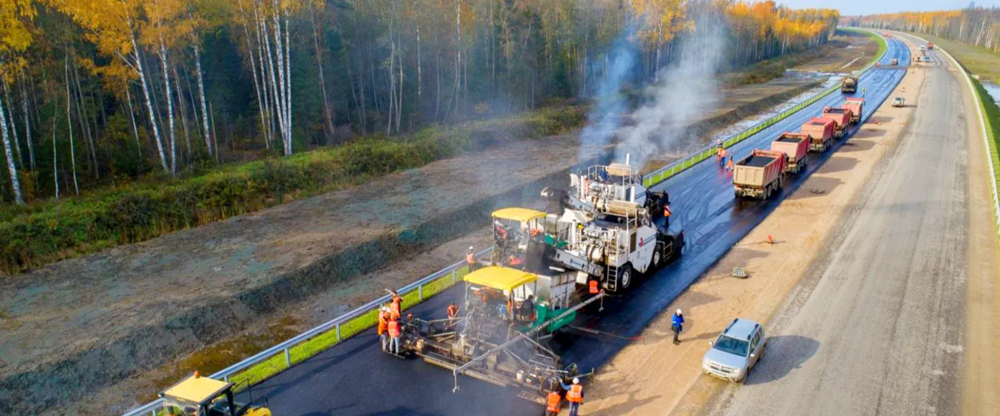
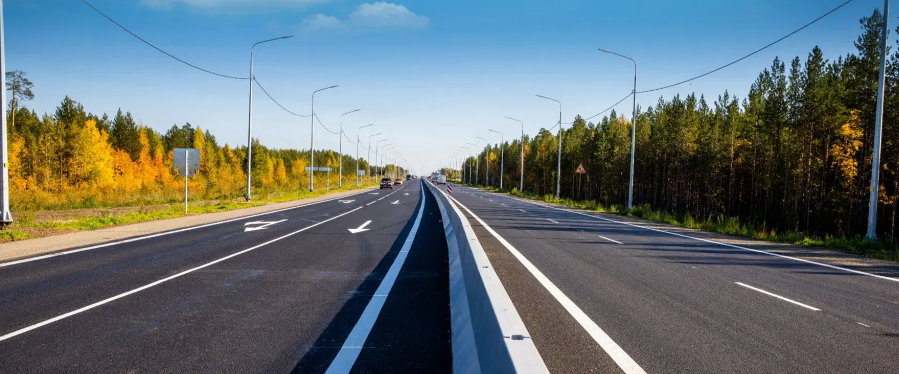
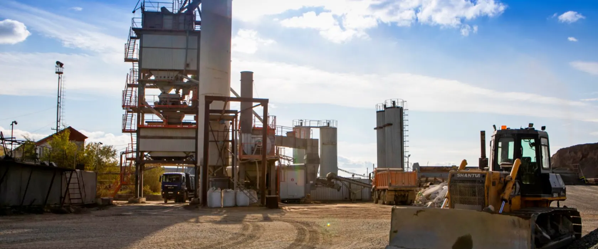
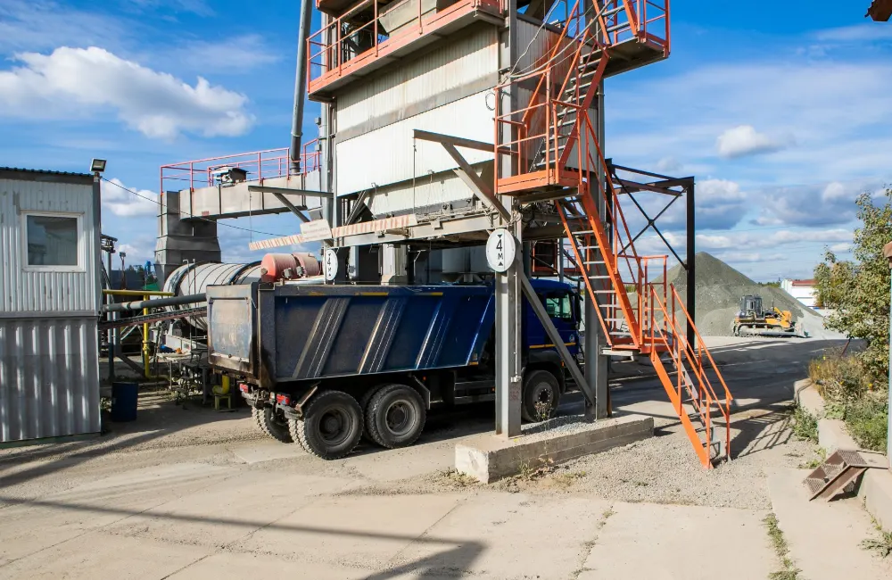
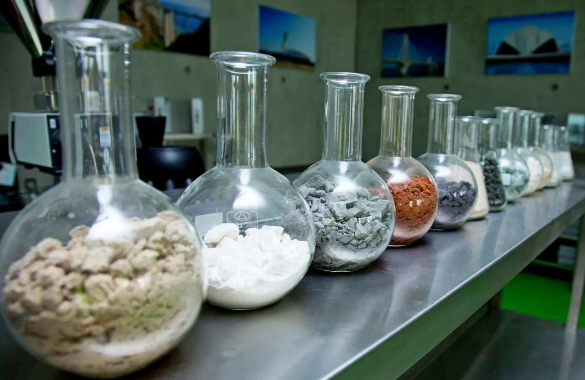
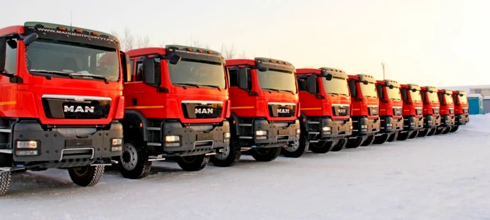
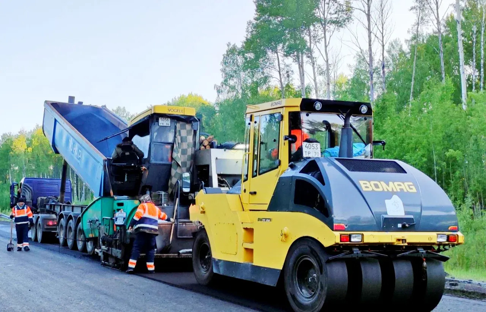
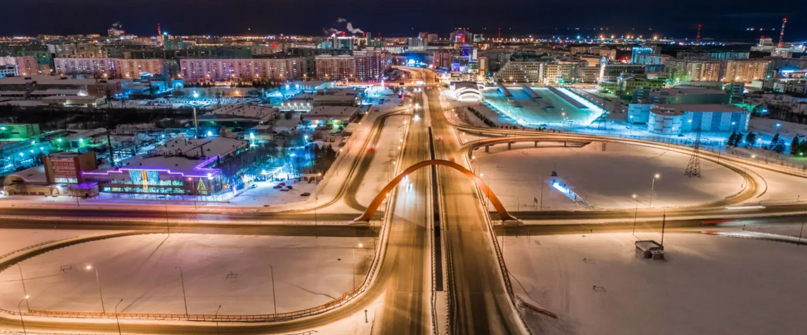

Строим и ремонтируем дороги с 1993 года
АО «АВТОДОРСТРОЙ», Сургут. Автомобильные дороги федерального и территориального значения, взлётно-посадочные полосы, мосты и путепроводы Западной Сибири.
- 600+сотрудников
- 300+единиц техники
- 4асфальтобетонных завода

тысяч тонн асфальтобетона и больше укладываем за дорожный сезон
Пять комплексов выходят на щебень
Асфальтоукладчики VOLVO и VOGELE с разогревателями швов Abacus, катки BOMAG всех необходимых типоразмеров, фрезы WIRTGEN и осветительные станции TowerLux.
Дорога целиком, от расчистки до барьера
Работаем генеральным подрядчиком и выполняем весь комплекс дорожно-строительных работ. Выберите вид работ на разрезе.
На производстве ведём экологический контроль: наблюдаем за состоянием окружающей среды, внедряем мероприятия по снижению выбросов и ресурсосберегающие технологии.
Все годы на одном шоссе
Каждая полоса показывает дорогу, улицу или мост: от первого года работ до последнего. Число на полосе показывает километры.

4асфальтобетонных завода Ammann и Wirtgen
У каждого завода свой дробильно-сортировочный узел и строительная лаборатория. Центробежные дробилки и грануляторы дают однородный кубовидный щебень, а всеми этапами производства мы управляем в реальном времени.
- 2002
- начали выпуск щебёночно-мастичного асфальтобетона
- 2015
- первыми в округе применили тонкослойные защитные покрытия из горячей битумоминеральной смеси

Лаборатория смотрит вглубь

Асфальт с завода, техника на объект
0 м³объём слоя в плотном теле



Сургут, Индустриальная, 27
628422, Ханты-Мансийский автономный округ – Югра